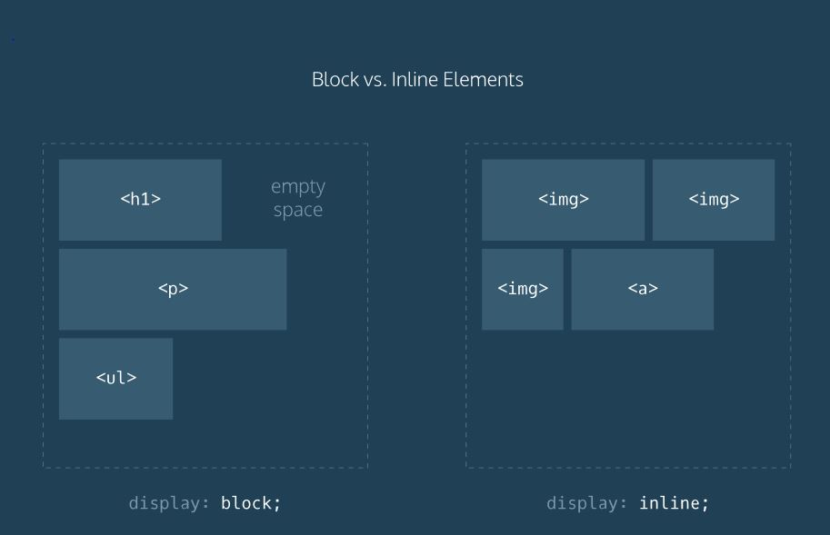
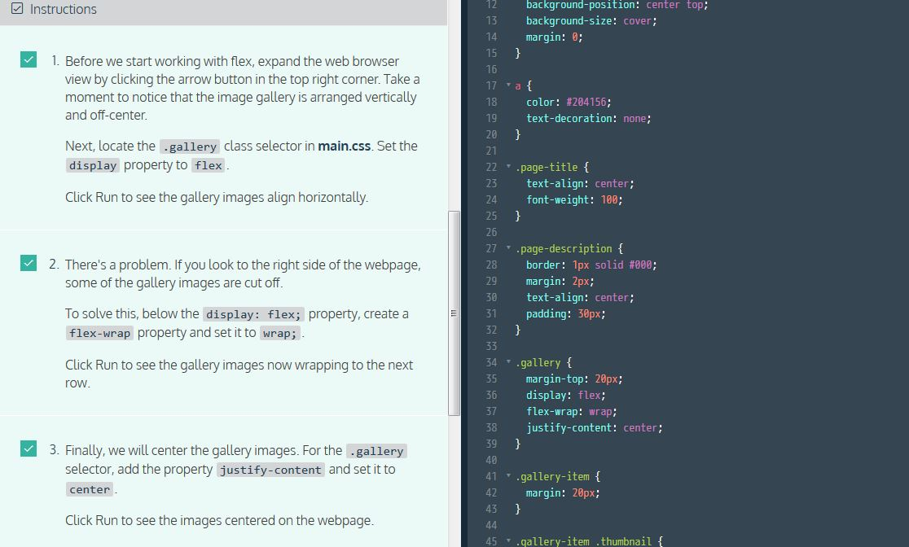
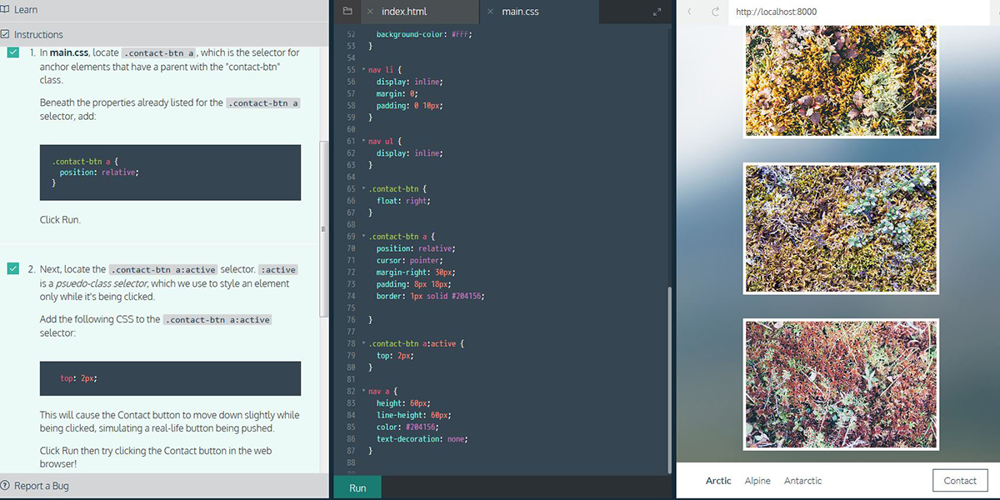

Web developers refer to the enclosing element as the parent element and the enclosed elements as children.
Referring to HTML elements as parents and children may sound funny, but it's a core web development concept. The web browser also knows about these parent/child relationships, which will be important as we explore CSS.
Code indentation signifies the relationship between parent and child elements.
Display types can be overwritten in CSS by using the display property. For example, we can make list items appear on the same line by setting display to inline. List items are block level by default. Setting list items to inline is useful for navigation bars.
the CSS float property. By using float, we have the option of floating elements left or right. Useful to fill empty spaces.
To make children of the div align horizontally on the webpage, in CSS we can use: display: flex; for the parent div. Not vertically. We can make sure no child element moves off the page by using flex-wrap: wrap; on the parent div. Finally, to center rows of children elements, we can use justify-content: center; on the parent div.
The CSS position property enables you to position HTML elements in exact locations on a webpage. One useful value for this property is relative. This value positions page elements on a webpage relative to where they would normally appear.
By first setting position: relative;, you can then use the CSS properties top, left, bottom, and right to shift an element away from where it would have normally appeared on the page.
e.g. The code snippet below moves a div with the class container 10px away from the up and 20px away from the left side of the page. .container { position: relative; top: 10px; left: 20px; }